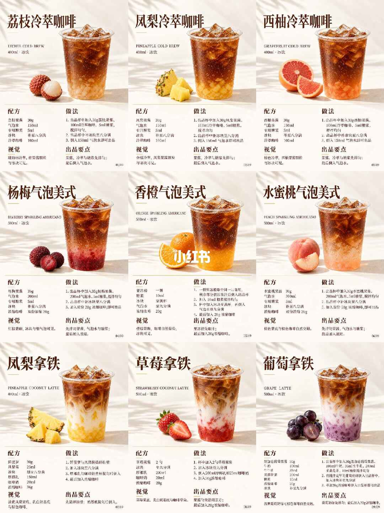
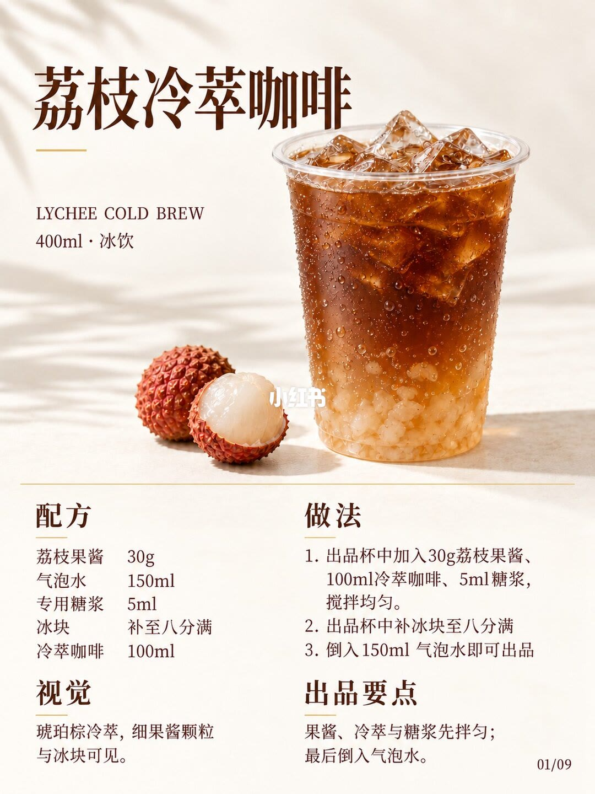
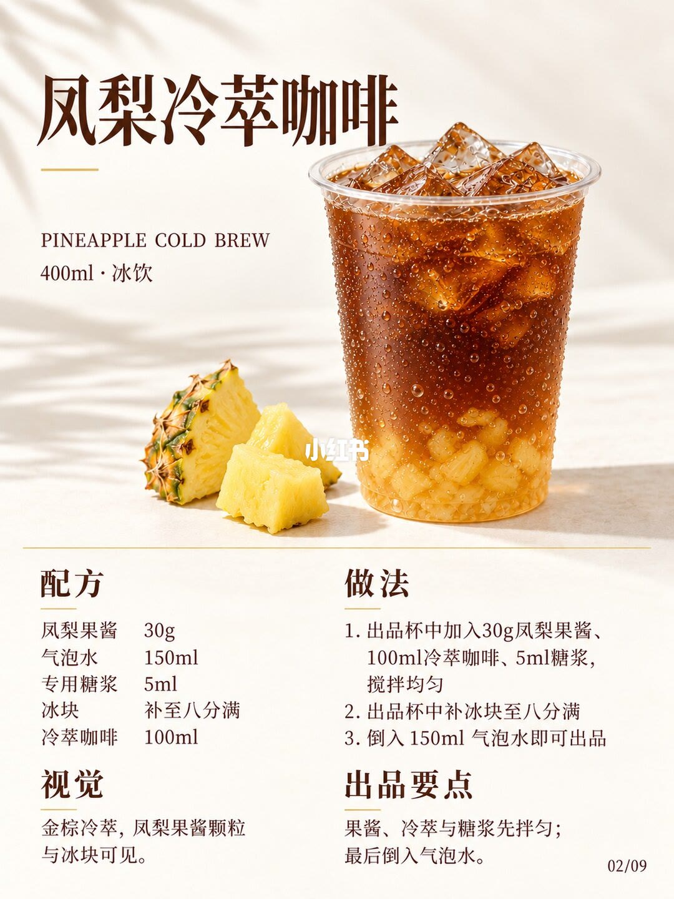
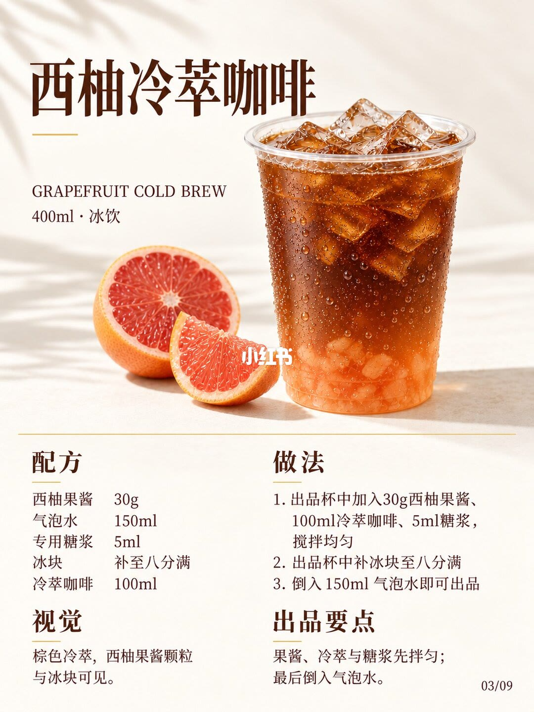
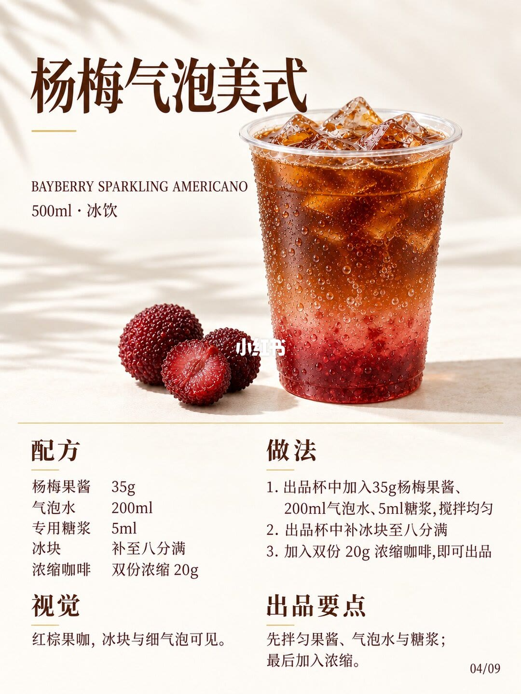
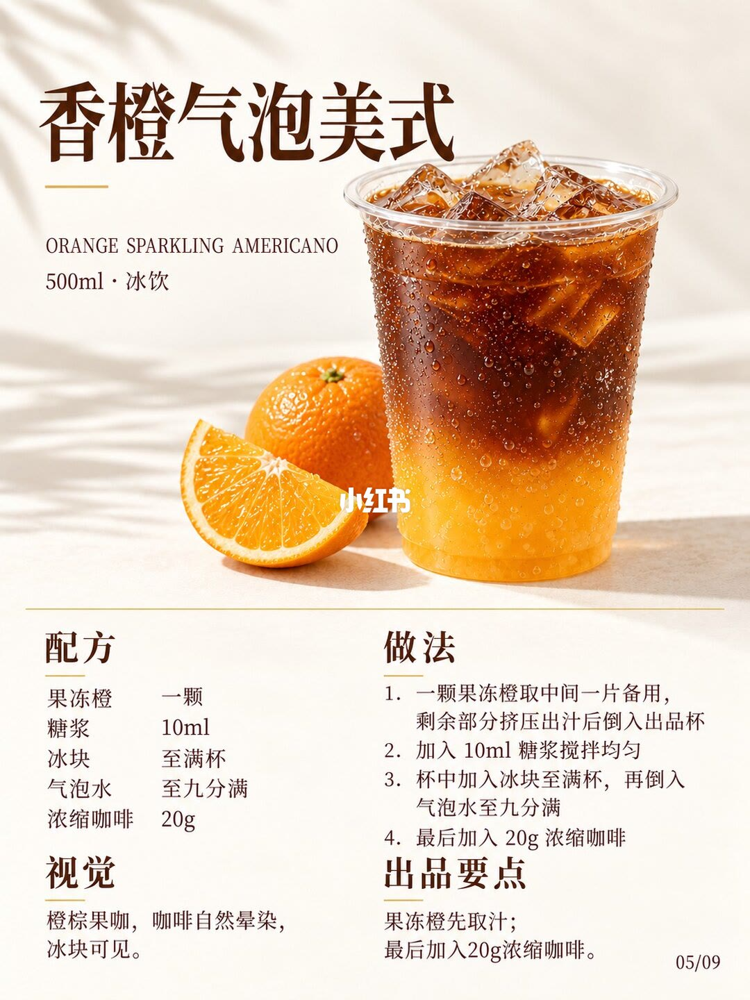
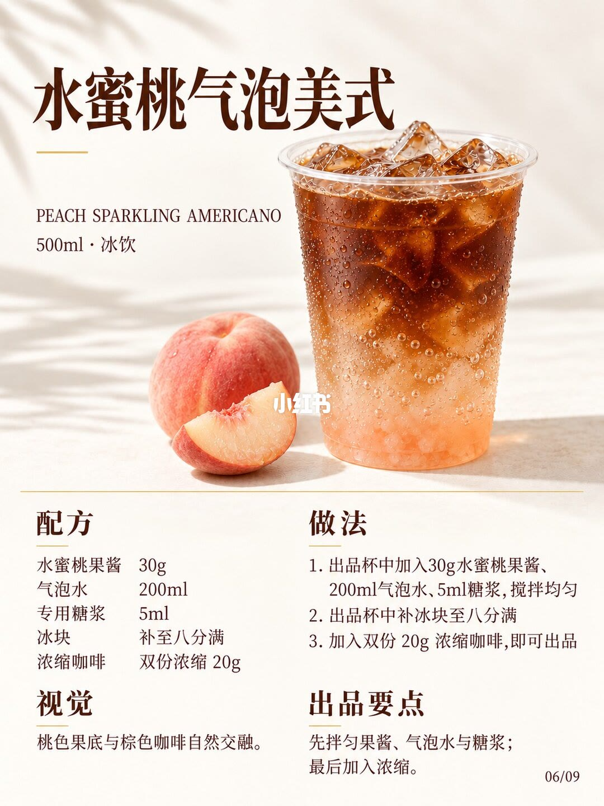
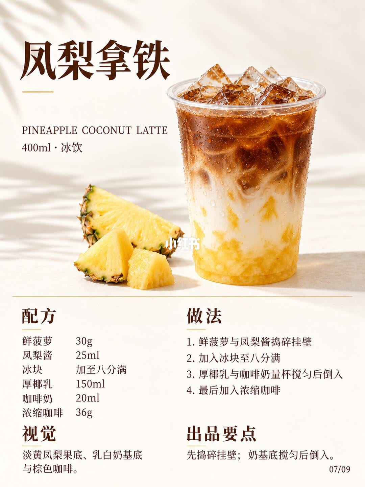
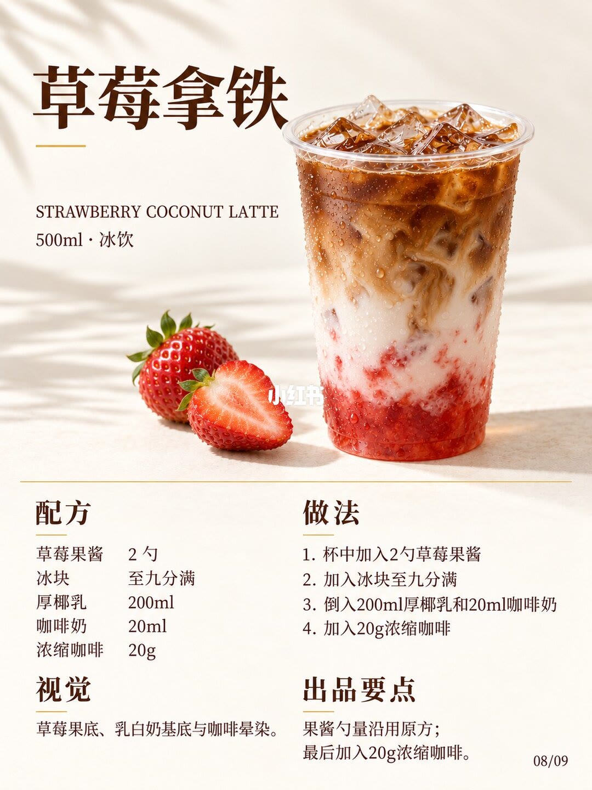
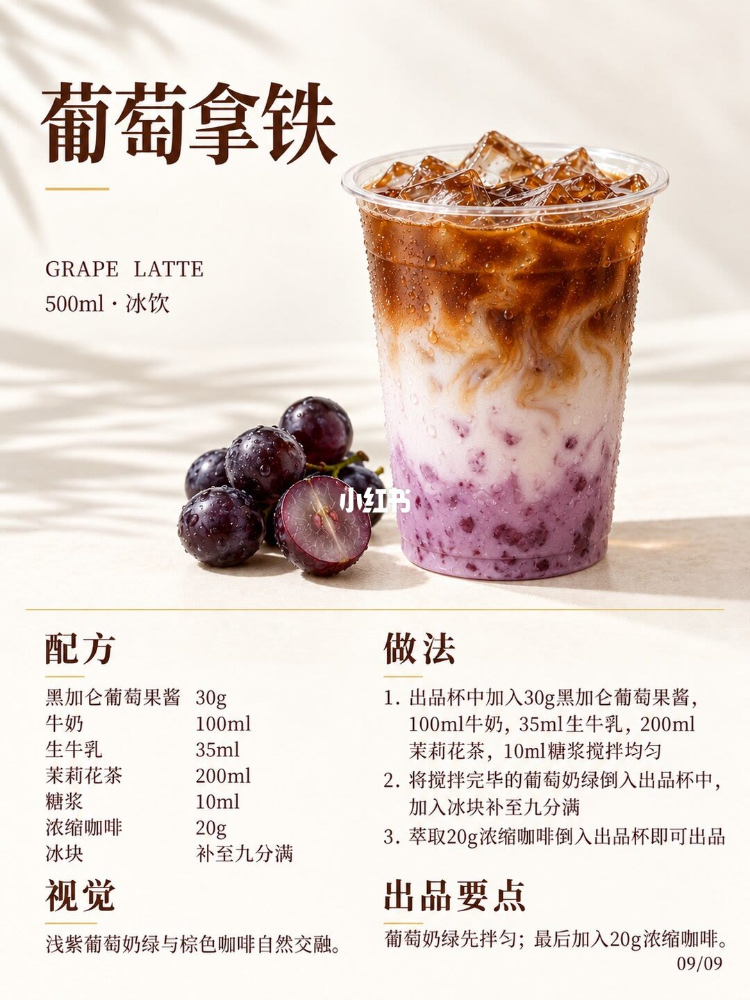

图文实录 · 小红书 · 甄茶笔记&大喜
9款果香咖啡｜配方做法
标题写 9 款，图上配方卡也是 9 张，页脚印 01/09 到 09/09。本笔记一共 10 张图：第 1 张是九宫格总览，后面 9 张各展开一款，没有第 10 款。三张冷萃都是 400ml 冰饮，果酱 30g、专用糖浆 5ml、冷萃 100ml 先拌匀，冰补到八分满，最后倒 150ml 气泡水。杨梅和水蜜桃是 500ml 果酱气泡美式，气泡水 200ml 先拌，浓缩印成「双份浓缩 20g」且最后加；香橙不用果酱，用一颗果冻橙。三张拿铁不能互相抄克数：凤梨拿铁是 400ml、浓缩 36g，草莓果酱只印 2 勺，葡萄是牛奶加茉莉花茶后再加 20g 浓缩。
1/10
九宫格把 9 款收在一页
这一页是 3×3 配方卡缩略，不是第 10 款。每格都有中文名、英文名、容量和「冰饮」、成品照片、水果小图，以及配方、做法、视觉、出品要点。格内页码从 01/09 排到 09/09，中间有小红书水印。
缩略字小，格内数字以第 2 页到第 10 页的单卡为准。单卡确认的九款是：荔枝冷萃咖啡、凤梨冷萃咖啡、西柚冷萃咖啡、杨梅气泡美式、香橙气泡美式、水蜜桃气泡美式、凤梨拿铁、草莓拿铁、葡萄拿铁。全是冰饮。400ml 四格，500ml 五格。

2/10
荔枝冷萃咖啡，卡面 01/09
英文行 LYCHEE COLD BREW。规格 400ml · 冰饮。透明杯里能看到浅色果酱颗粒、琥珀棕色液体和冰块，旁边有带壳荔枝和剥开的果肉。
配方：荔枝果酱 30g，气泡水 150ml，专用糖浆 5ml，冰块补至八分满，冷萃咖啡 100ml。
做法：1. 出品杯中加入 30g 荔枝果酱、100ml 冷萃咖啡、5ml 糖浆，搅拌均匀。2. 出品杯中补冰块至八分满。3. 倒入 150ml 气泡水即可出品。
视觉：琥珀棕冷萃，细果酱颗粒与冰块可见。出品要点：果酱、冷萃与糖浆先拌匀；最后倒入气泡水。

3/10
凤梨冷萃咖啡，卡面 02/09
英文行 PINEAPPLE COLD BREW。规格 400ml · 冰饮。杯底是黄色凤梨果酱颗粒，上面是深色冷萃和冰块，旁边有凤梨块。
配方：凤梨果酱 30g，气泡水 150ml，专用糖浆 5ml，冰块补至八分满，冷萃咖啡 100ml。
做法与荔枝冷萃相同，只换果酱名称：出品杯中加入 30g 凤梨果酱、100ml 冷萃咖啡、5ml 糖浆，搅拌均匀；补冰块至八分满；倒入 150ml 气泡水即可出品。
视觉：金棕冷萃，凤梨果酱颗粒与冰块可见。出品要点：果酱、冷萃与糖浆先拌匀；最后倒入气泡水。

4/10
西柚冷萃咖啡，卡面 03/09
英文行 GRAPEFRUIT COLD BREW。规格 400ml · 冰饮。杯底是粉色西柚果酱，上面是棕色冷萃和冰块，旁边有切开的西柚。
配方：西柚果酱 30g，气泡水 150ml，专用糖浆 5ml，冰块补至八分满，冷萃咖啡 100ml。
做法仍是三步：出品杯中加入 30g 西柚果酱、100ml 冷萃咖啡、5ml 糖浆，搅拌均匀；补冰块至八分满；倒入 150ml 气泡水即可出品。
视觉：棕色冷萃，西柚果酱颗粒与冰块可见。出品要点：果酱、冷萃与糖浆先拌匀；最后倒入气泡水。

5/10
杨梅气泡美式，卡面 04/09
英文行 BAYBERRY SPARKLING AMERICANO。规格 500ml · 冰饮。杯底是深色杨梅果酱，中间有细气泡，上层是深色浓缩，旁边有杨梅。
配方：杨梅果酱 35g，气泡水 200ml，专用糖浆 5ml，冰块补至八分满，浓缩咖啡为双份浓缩 20g。
做法：1. 出品杯中加入 35g 杨梅果酱、200ml 气泡水、5ml 糖浆，搅拌均匀。2. 出品杯中补冰块至八分满。3. 加入双份 20g 浓缩咖啡，即可出品。
视觉：红棕果咖，冰块与细气泡可见。出品要点：先拌匀果酱、气泡水与糖浆；最后加入浓缩。卡面把「双份」和「20g」印在一起，没有另印两份各多少克。

6/10
香橙气泡美式，卡面 05/09
英文行 ORANGE SPARKLING AMERICANO。规格 500ml · 冰饮。杯中是橙色果汁层和棕色咖啡晕开，冰块和细气泡可见，旁边有整橙和橙片。
配方：果冻橙一颗，糖浆 10ml，冰块至满杯，气泡水至九分满，浓缩咖啡 20g。这里写的是「糖浆」，不是前几张的「专用糖浆」。没有果酱克数。
做法：1. 一颗果冻橙取中间一片备用，剩余部分挤压出汁后倒入出品杯。2. 加入 10ml 糖浆搅拌均匀。3. 杯中加入冰块至满杯，再倒入气泡水至九分满。4. 最后加入 20g 浓缩咖啡。
视觉：橙棕果咖，咖啡自然晕染，冰块可见。出品要点：果冻橙先取汁；最后加入 20g 浓缩咖啡。出汁毫升和图上那一片的去向，除了「备用」二字，没有再写。

7/10
水蜜桃气泡美式，卡面 06/09
英文行 PEACH SPARKLING AMERICANO。规格 500ml · 冰饮。粉色果底、气泡和棕色咖啡在杯中交融，旁边有桃子。
配方：水蜜桃果酱 30g，气泡水 200ml，专用糖浆 5ml，冰块补至八分满，浓缩咖啡为双份浓缩 20g。
做法：1. 出品杯中加入 30g 水蜜桃果酱、200ml 气泡水、5ml 糖浆，搅拌均匀。2. 出品杯中补冰块至八分满。3. 加入双份 20g 浓缩咖啡，即可出品。
视觉：桃色果底与棕色咖啡自然交融。出品要点：先拌匀果酱、气泡水与糖浆；最后加入浓缩。步骤骨架和杨梅气泡美式相同，果酱是 30g，不是杨梅那张的 35g。

8/10
凤梨拿铁，卡面 07/09
英文行 PINEAPPLE COCONUT LATTE。规格 400ml · 冰饮。杯壁有淡黄果泥，中间是乳白奶基底，上面是棕色咖啡和冰块，旁边有凤梨片。这张和凤梨冷萃不是同一套配方。
配方：鲜菠萝 30g，凤梨酱 25ml，冰块加至八分满，厚椰乳 150ml，咖啡奶 20ml，浓缩咖啡 36g。凤梨酱的单位是毫升。没有气泡水，也没有专用糖浆。
做法：1. 鲜菠萝与凤梨酱捣碎挂壁。2. 加入冰块至八分满。3. 厚椰乳与咖啡奶量杯搅匀后倒入。4. 最后加入浓缩咖啡。第 4 步没有再写 36g，克数在配方栏。
视觉：淡黄凤梨果底、乳白奶基底与棕色咖啡。出品要点：先捣碎挂壁；奶基底搅匀后倒入。

9/10
草莓拿铁，卡面 08/09
英文行 STRAWBERRY COCONUT LATTE。规格 500ml · 冰饮。杯底是红色果酱，中间乳白，上面咖啡晕开，旁边有草莓。
配方：草莓果酱 2 勺，冰块至九分满，厚椰乳 200ml，咖啡奶 20ml，浓缩咖啡 20g。果酱没有克数。
做法：1. 杯中加入 2 勺草莓果酱。2. 加入冰块至九分满。3. 倒入 200ml 厚椰乳和 20ml 咖啡奶。4. 加入 20g 浓缩咖啡。
视觉：草莓果底、乳白奶基底与咖啡晕染。出品要点：果酱勺量沿用原方；最后加入 20g 浓缩咖啡。「原方」的克数这张卡没有印出来。

10/10
葡萄拿铁，卡面 09/09
英文行 GRAPE LATTE。规格 500ml · 冰饮。浅紫果奶和棕色咖啡在杯中交融，旁边有深色葡萄。这张没有厚椰乳，用的是牛奶、生牛乳和茉莉花茶。
配方：黑加仑葡萄果酱 30g，牛奶 100ml，生牛乳 35ml，茉莉花茶 200ml，糖浆 10ml，浓缩咖啡 20g，冰块补至九分满。
做法：1. 出品杯中加入 30g 黑加仑葡萄果酱，100ml 牛奶，35ml 生牛乳，200ml 茉莉花茶，10ml 糖浆搅拌均匀。2. 将搅拌完毕的葡萄奶绿倒入出品杯中，加入冰块补至九分满。3. 萃取 20g 浓缩咖啡倒入出品杯即可出品。第 1 步已经写出品杯，第 2 步又写倒入出品杯，图上没有另写雪克杯或量杯。
视觉：浅紫葡萄奶绿与棕色咖啡自然交融。出品要点：葡萄奶绿先拌匀；最后加入 20g 浓缩咖啡。

汇总
九款是三组骨架，换水果之前先对咖啡和杯量
结论
图上是 9 款，不是 10 款。冷萃三款（实录 2/10–4/10）都是果酱 30g、专用糖浆 5ml、冷萃 100ml 先拌，冰到八分满，最后气泡水 150ml，杯规 400ml。杨梅和水蜜桃（5/10、7/10）是气泡水 200ml 先拌、冰到八分满、最后加印成 20g 的双份浓缩，杯规 500ml，果酱分别是 35g 和 30g。香橙（6/10）是一颗果冻橙取汁、糖浆 10ml、冰至满杯、气泡水至九分满、浓缩 20g。凤梨拿铁（8/10）是鲜菠萝 30g、凤梨酱 25ml、厚椰乳 150ml、咖啡奶 20ml、浓缩 36g。草莓拿铁（9/10）果酱是 2 勺，厚椰乳 200ml，浓缩 20g。葡萄拿铁（10/10）是 30g 果酱加 100ml 牛奶、35ml 生牛乳、200ml 茉莉花茶、10ml 糖浆，最后 20g 浓缩。
支撑页
总览在 1/10。荔枝、凤梨、西柚三张冷萃在 2/10–4/10。杨梅气泡美式在 5/10，香橙气泡美式在 6/10，水蜜桃气泡美式在 7/10。凤梨拿铁在 8/10，草莓拿铁在 9/10，葡萄拿铁在 10/10。
边界
冷萃怎么萃、浓缩怎么萃、专用糖浆和糖浆差在哪、咖啡奶是什么，十页都没印。草莓「2 勺」没有克数，「沿用原方」也没有把原方克数印在这张卡上。双份浓缩只和 20g 印在同一格，没有写成两份各多少克。香橙出汁没有毫升，备用橙片没有写是装饰还是入杯。葡萄做法第 1 步和第 2 步都写出品杯，中间容器无法确认。冰块只写八分满、九分满或满杯，没有克数，所以液体毫升加起来对不上 400ml 或 500ml 的杯规。全是冰饮，没有热饮步骤。